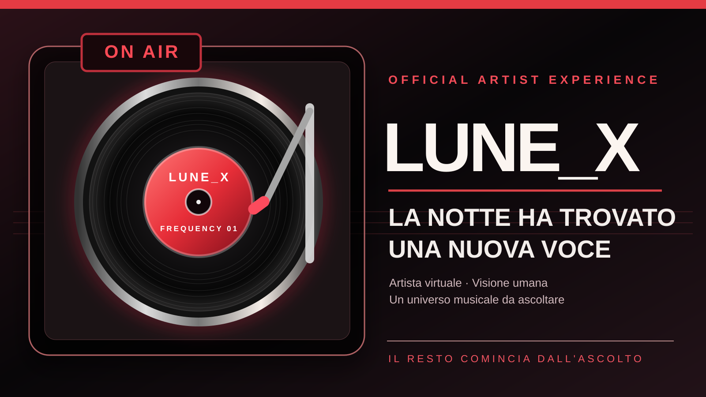

Official press kit · November 2026
Lune_X
A virtual musical artist with a distinctive creative identity, between electronic music, desire, intimacy and Mediterranean journeys. Human creative direction meets AI-assisted production.

Short biography
Lune_X is a virtual artistic identity under the human creative direction of Marcelo Javier Fernandez Caballero. The project creates a repertoire of electronic and dance music, intimate moods and travel-inspired soundscapes, distributed via DistroKid.
Artistic statement
“The artist is virtual. The creative direction is human. The technology is disclosed. Everything else begins with listening.”
Catalogue shown by the distributor
DistroKid screenshots supplied by the creative director list ten releases and 99 tracks. These figures are not streaming statistics, sales or certifications.
Three featured songs
Frattura Notturna, In The Dark We See and Next Stop: Torremolinos represent transformation, intimacy and freedom. The descriptions are editorial themes rather than certified technical reviews.
Listen and discover
Apple Music and Spotify link to artist profiles provided by the project; YouTube remains a search link.
AI production and commercial rights
Lune_X is not a real person and is not presented as one. Marcelo Javier Fernandez Caballero directs the creative project. Tracks are produced with a paid Suno Pro subscription and distributed through DistroKid. Commercial use depends on the applicable licences and rights in each recording. Copyright protection for AI-generated output is not automatically guaranteed.
Official social channels
@Lunex_Xmusic · #Lune_X · #Lune_xmusic
Legal notices and rights · Privacy policy
For editorial coverage, cite the name exactly as Lune_X and describe the project as a virtual musician with human creative direction. Verify image rights before reusing any promotional visuals.